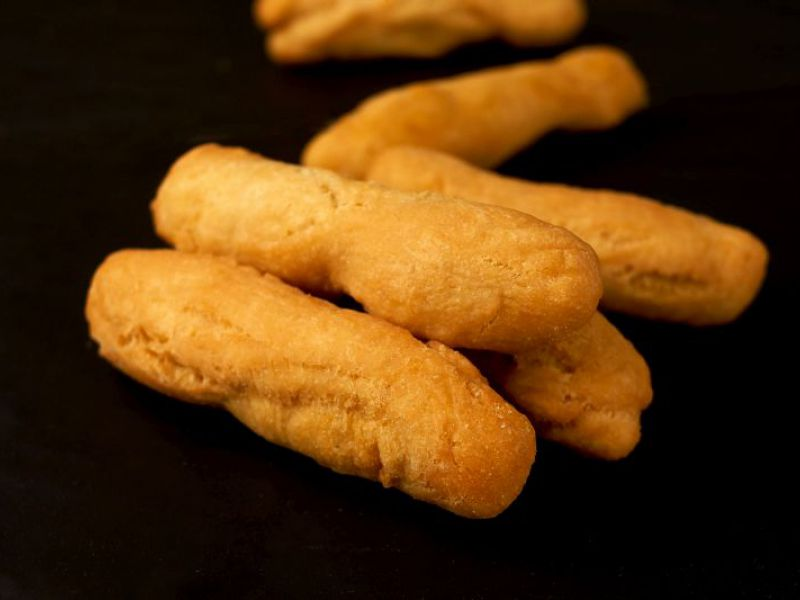

Festival

Description
Jamaican festival dumpling is a type of street food eaten most with escovitch fish or Jamaican jerk chicken.
Ingredients
- 4 ounce(s) all purpose flour
- 2 teaspoon(s) baking powder
- 8 ounce(s) Cornmeal
- 2 ounce(s) sugar
- 2 teaspoon(s) nutmeg, grated
- 1 teaspoon(s) salt
- 2 tablespoon(s) Margarine
- 1 teaspoon(s) lime juice
- 1 cup(s) water
- 1 cup(s) Vegetable Oil
Steps
- In a large bowl sift flour, baking powder and Grace Cornmeal.
- Add sugar, nutmeg, salt, Grace Hello Margarine and lime juice.
- Gradually add water, just enough to bind mixture to a manageable dough.
- Leave to relax for two minutes.
- Heat Grace Vegetable Oil in a large frying pan, shape dough into fingers and fry until golden brown.
- Drain on absorbent paper.
back